Torneo de Karate WKF — Guía de uso e informe de prueba
Simulación completa en micancha.com.py con el torneo «XIII Torneo Internacional Seigokan [PRUEBA]» · 7 de noviembre de 2026
1. Resumen del resultado
Se armó un torneo de prueba que replica la carta de invitación del XIII Seigokan (28/11/2026, Ciudad del Este, reglamento WKF), con 4 categorías, 5 dojos de Paraguay, Argentina, Brasil y Chile, y 20 atletas ficticios. Se recorrió todo el flujo desde la interfaz, con la cuenta del organizador.
| Etapa | Estado | Comentario |
|---|---|---|
| Crear campeonato con categorías | Funciona | No pide fecha ni sede al crear; se completan después en Configuración. |
| Datos básicos, sede, modalidad, visibilidad | Con detalles | Al buscar la ciudad en el mapa se borra el nombre del lugar. |
| Inscripción de dojos y atletas | Con detalles | El botón «Añadir Atleta» no hace nada; hay que entrar a la ficha del dojo. Los dojos nuevos aparecen como «Eliminado». |
| Check-in (peso y pago) | Funciona | Registra peso, estatura y pago. |
| Báscula oficial WKF / walkover | No funciona | No conoce la categoría del atleta y el registro da error 500 sin avisar. |
| Agrupación automática WKF | No funciona | «Torneo no encontrado». |
| Sorteo de llaves WKF | No funciona | Error de base de datos que además se muestra al usuario. |
| Programar combates manualmente | Funciona con límites | No filtra atletas por categoría, no pide tatami y guarda la fase como «grupos». |
| Mesa de control WKF | Funciona | Corregido hoy: antes tapaba los selectores y no cargaba el torneo. |
| Marcador TV en vivo | Funciona | Nombres, puntos, Senshu, reloj y avisos de VR en tiempo real. |
| Video Review (pedido y veredicto) | Funciona | Ciclo completo sincronizado en mesa, TV y tablet del juez. |
| Cierre del combate | Con detalles | Guarda el resultado, pero no registra al ganador ni lo pasa a la siguiente ronda. |
2. Crear el campeonato
1 Entrar al panel del organizador
Con la cuenta del organizador se abre Mis campeonatos. El administrador también puede entrar como organizador desde /admin → Organizadores → clic en la fila del organizador.
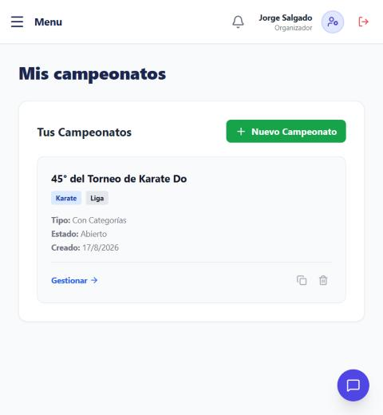
2 Elegir «Campeonato con categorías»
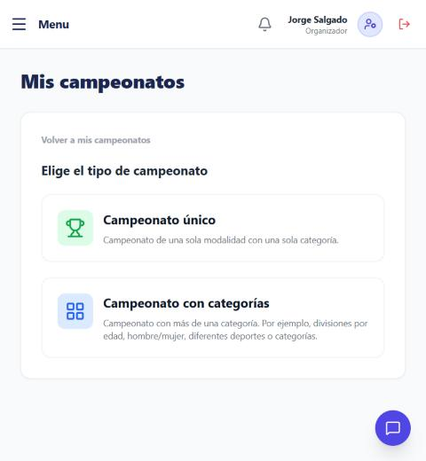
3 Nombre, deporte, formato y categorías
Nombre: XIII Torneo Internacional Seigokan [PRUEBA] · Deporte: Karate · Formato: Sistema Oficial WKF (Kata y Kumite). Con Agregar Categoría y Nueva División se cargaron:
- Kumite Cadete Femenino (14-15 años) → −54 kg
- Kumite Cadete Masculino (14-15 años) → −63 kg
- Kumite Senior Masculino → −75 kg
- Kata Senior Femenino → Oficial WKF
Al final, Crear Campeonato.
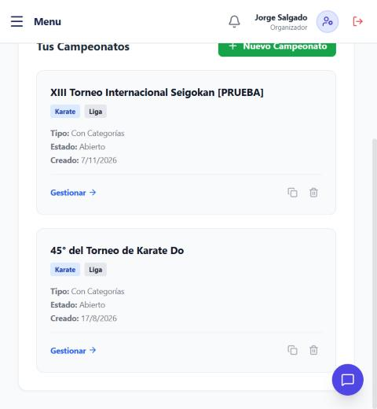
3. Configurar datos, sede e inscripción
4 Abrir Configuración
En el campeonato, Gestionar → menú lateral Configuración. Desde ahí se maneja todo el torneo.
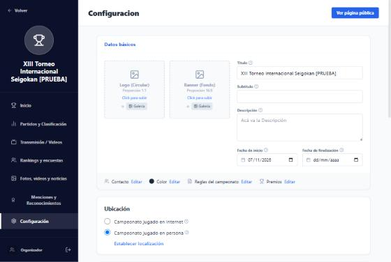
5 Datos básicos y sede
Completar subtítulo, descripción y fechas de inicio y fin (28/11/2026). Se guardan solos al salir de cada campo. En Ubicación → «Campeonato jugado en persona» → Establecer localización: escribir el lugar, buscar la ciudad en el mapa y Guardar.
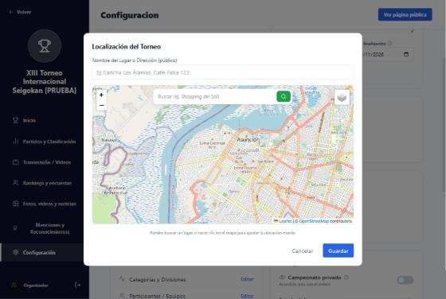
6 Modalidad «Por atleta» y visibilidad
En Modalidad de Inscripción elegir Por atleta, que permite inscribir a cada atleta de un dojo en una categoría distinta. En Divulgación dejar apagado «Campeonato privado» para que el torneo sea público.
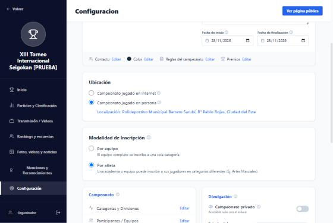
4. Inscribir dojos y atletas
7 Crear los dojos
Configuración → Participantes / Equipos → Editar. Escribir el nombre del dojo y pulsar Añadir. Se crearon: Seigokan Ciudad del Este (PY), Shito-Ryu Asunción (PY), Goju Kai Posadas (AR), Shotokan Foz do Iguaçu (BR) y Karate Do Santiago (CL).
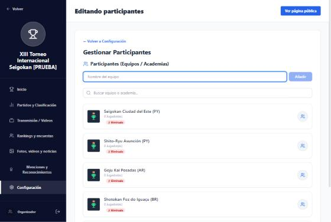
8 Cargar los atletas desde la ficha del dojo
Hacer clic sobre el nombre del dojo para abrir su ficha. El ícono redondo «Añadir Atleta» no funciona. En Jugadores, para cada atleta: nombre, género, formato (Combate para Kumite, Formas para Kata), fecha de nacimiento y Añadir. Completar el entrenador, marcar Inscripción Confirmada y Guardar.
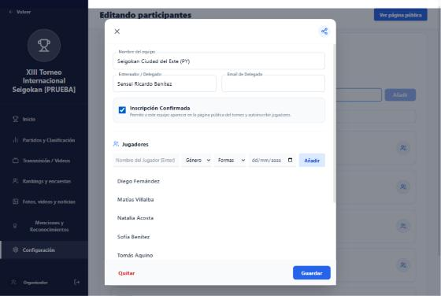
Se inscribieron 20 atletas: 5 cadetes mujeres, 6 cadetes varones, 5 senior varones y 4 senior mujeres en Kata. La ficha no pide peso ni categoría.
5. Check-in y pesaje
9 Check-in de cada atleta
Configuración → Check-in (Pesaje) → Editar. En cada atleta, Hacer Check-in: peso, estatura (opcional), Pago Confirmado y Confirmar Check-in.
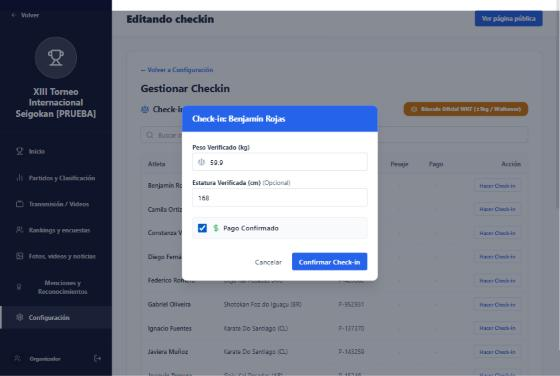
10 Báscula oficial WKF (no usar todavía)
El botón «Báscula Oficial WKF (±1 kg / Walkover)» calcula bien si el atleta excede el peso, pero solo si se elige a mano el límite correcto. Por defecto propone otro (con una cadete femenina sugirió «−75 kg Masculino» y la dio por apta). Además, al registrar la descalificación el servidor da error y no se guarda nada.
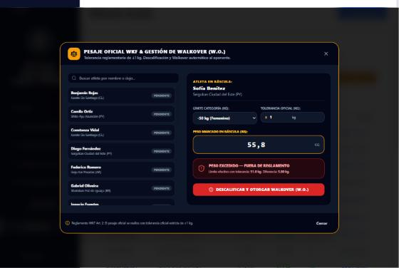
6. Emparejamiento (llaves)
11 Pantalla de llaves
Configuración → Llaves / Combates (Programación) → Editar.
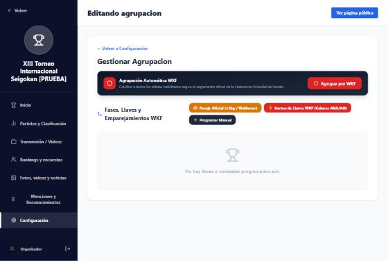
12 Programar cada combate
Programar Manual → elegir división, ronda, Atleta Rojo (AKA) y Atleta Azul (AO) → Programar Combate.
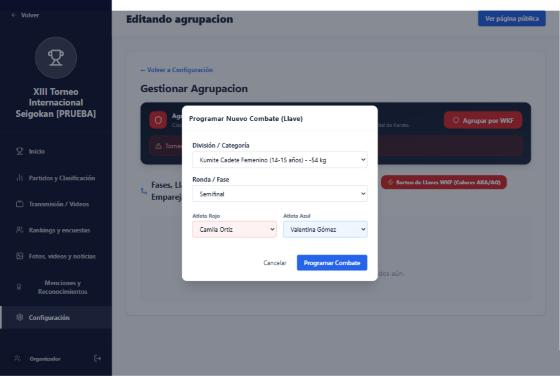
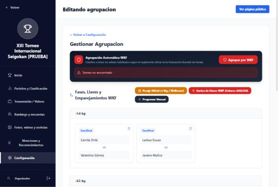
7. Combate en la mesa con Video Review
13 Abrir la mesa de control
https://micancha.com.py/torneos/<ID-del-torneo>/arbitraje/combate?tatami=1. Arriba se elige el tatami y el combate. Los botones Marcador TV, Cámara y Juez VR abren cada estación ya conectada a ese combate.
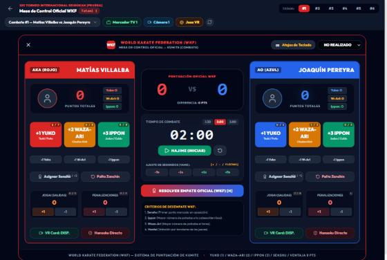
14 Disputar el combate
HAJIME (INICIAR) arranca el reloj. Los botones +1 Yuko, +2 Waza-ari y +3 Ippon suman puntos a cada lado. El Marcador TV se actualiza al instante, con Senshu incluido.
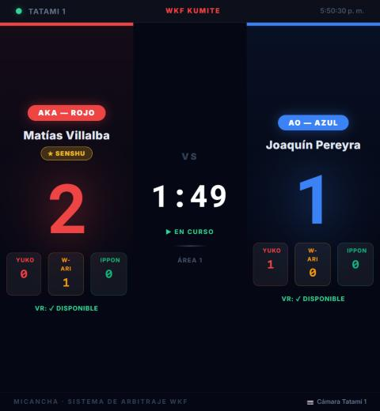
15 Video Review
El coach levanta la tarjeta → la mesa pulsa VR Card: DISP. de su lado. El reloj se pausa, la TV muestra «VIDEO REVIEW» y la tablet del juez recibe el pedido con cuenta regresiva. El juez decide con +1/+2/+3/SENSHU, ✗ RECHAZADO o 👁 MIENAI.
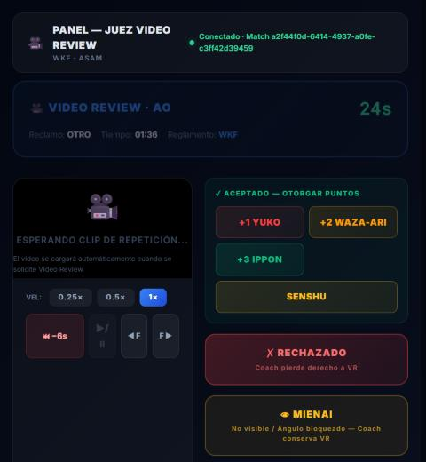
En la prueba, AO pidió VR y el juez otorgó +2 Waza-ari: el marcador pasó de 2–1 a 2–3 en todas las pantallas y AO conservó la tarjeta.
16 Terminar el combate
Reanudar con Hajime, seguir puntuando y, al terminar, poner el estado arriba a la derecha en FINALIZADO. El resultado (5–3) queda guardado y el VR figura en el historial.
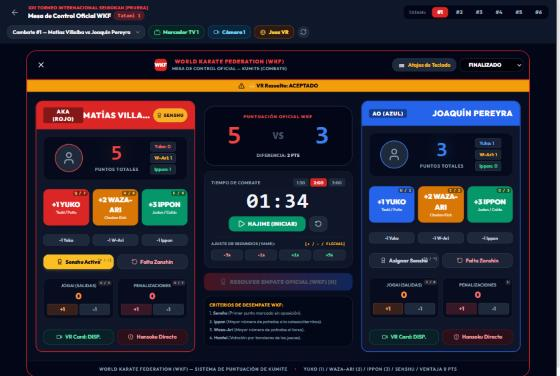
8. Fallos encontrados
Corregidos y publicados hoy
- Seis páginas (mesa de combate, inscripción, sorteo, invitación, delegados y registro de jugadores) no leían el ID del torneo y pedían
/torneos/undefined. - La mesa WKF tapaba el selector de tatami y combate y los botones de estaciones.
- El botón Juez VR abría la tablet en el combate «123».
Pendientes, por prioridad
| # | Fallo | Impacto |
|---|---|---|
| 1 | Agrupación y sorteo WKF rotos. Usan otra tabla (torneos_generales) distinta de la del torneo (torneos). El sorteo además emparejaría a todos los atletas entre sí, sin separar categorías. | Alto |
| 2 | Tatami inestable. Si el combate no tiene tatami guardado, se calcula por su posición en la lista y cambia cuando la lista cambia. | Alto |
| 3 | No se registra ganador ni se avanza en la llave al finalizar. | Alto |
| 4 | Báscula WKF: no conoce la categoría, usa una lista de pesos fija y al guardar da error 500 sin avisar. | Alto |
| 5 | Seguridad: los endpoints de Video Review no piden sesión; cualquiera puede cambiar un marcador. | Alto |
| 6 | «Programar Manual» no filtra por división, no pide tatami y guarda la fase como «grupos». | Medio |
| 7 | Los errores de base de datos se muestran al usuario con el SQL completo. | Medio |
| 8 | «Añadir Atleta» (ícono) no hace nada; los dojos nuevos aparecen como «Eliminado». | Medio |
| 9 | La tarjeta VR se muestra «BLOQ.» mientras el pedido está pendiente; el reclamo siempre figura como «OTRO». | Bajo |
| 10 | El mapa borra el nombre del lugar; la tarjeta del campeonato dice «Liga»; el panel /admin-generales rechaza el rol admin. | Bajo |